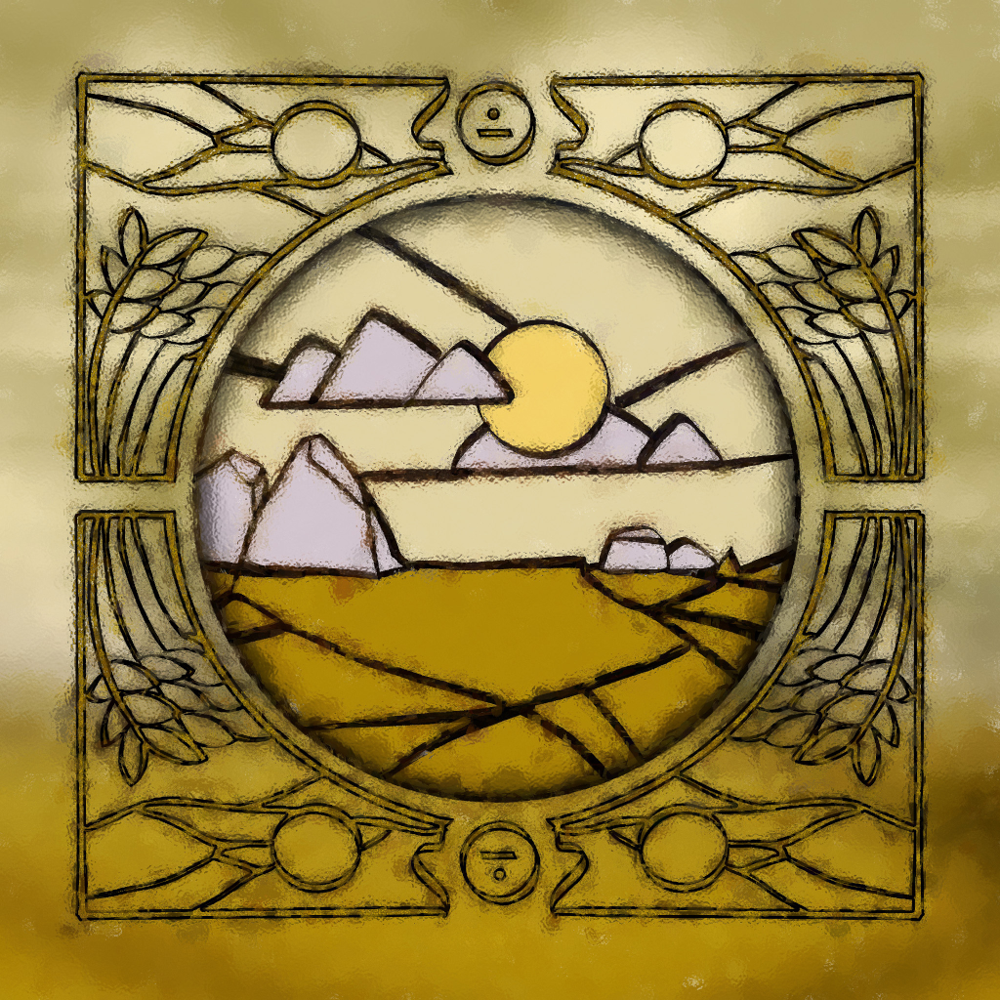
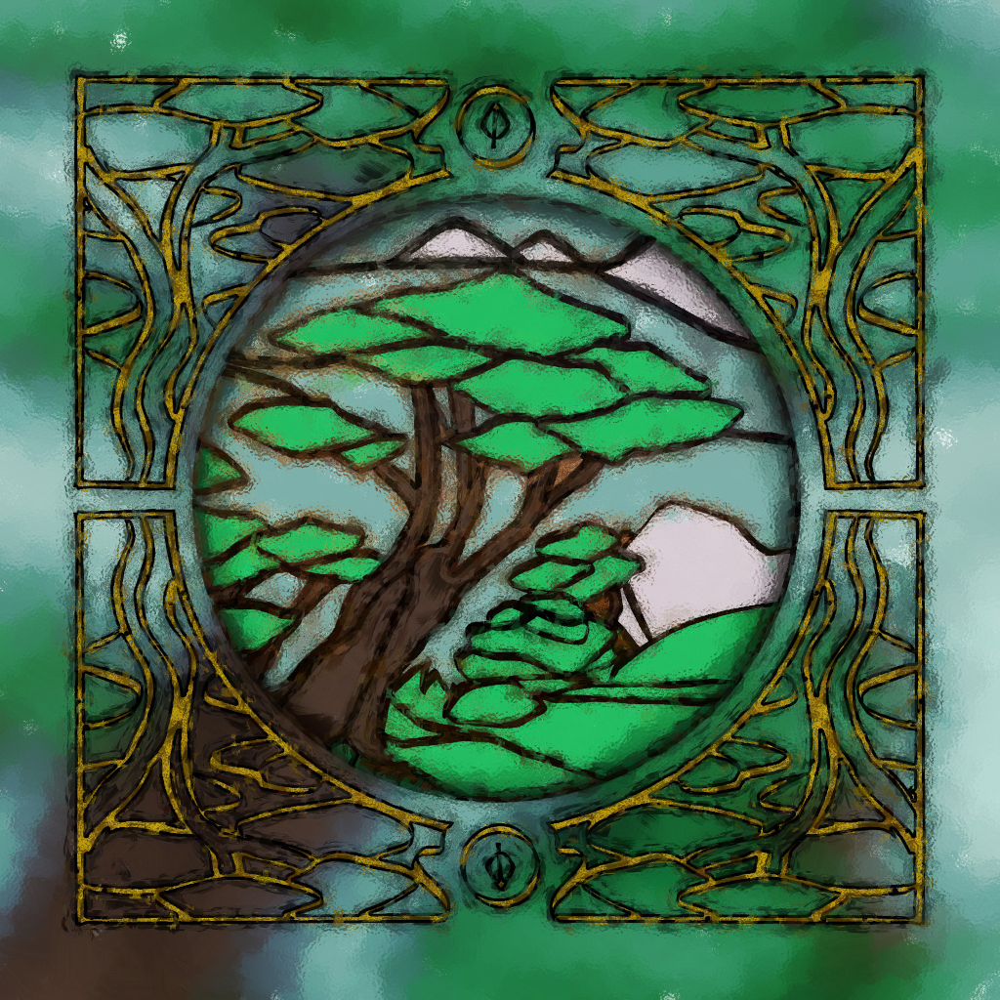
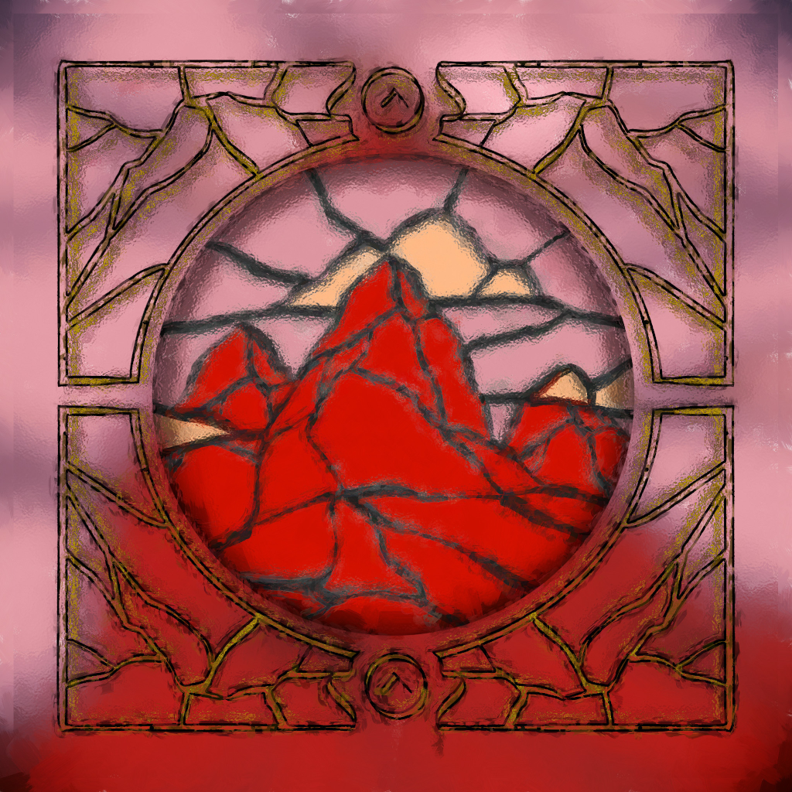
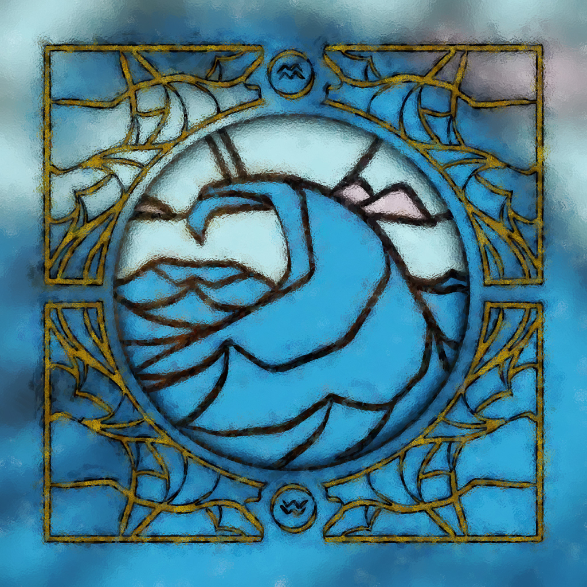
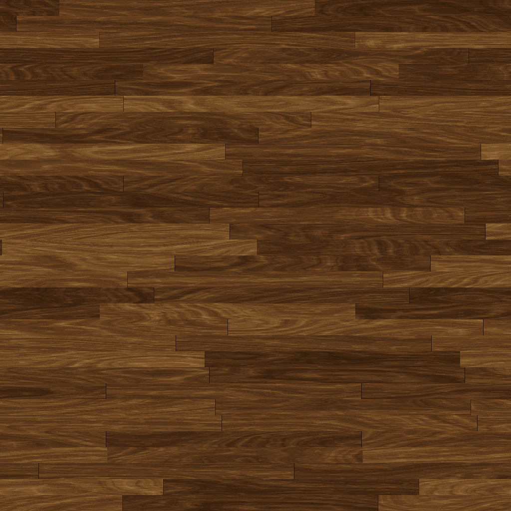
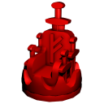

"Thrones is a game designed to cultivate cunning and strategic maneuvering on a battlefield created by you, your opponent, and the battle between you.
The struggle for supremacy will take many forms as your infantry melee, cavalry charge, and artillery fire.
You may strike with your Throne’s royal guard or unleash a Dragon on any challenger to your claim. Not even fate itself is out of your influence and reach.
Your enemies, however, are diverse, and their lands will be treacherous to a conqueror. Destruction of their armies is just one path to victory;
If you succeed in claiming their Fortress as your own, a pretender’s family will surely plea for peace, which you can consider as their army disbands in defeat."
Tiles
Plains
Forest
Mountain
Water
Fortress
Pieces
Rangers (fierce vikings)
Can attack from Mountains.
When leaving a Forest tile, may choose to turn it into a Plains.
Spearmen (trained veterans)
Can attack onto Water.
May move any number of connected Water while moving.
Crossbowmen (short ranged)
Fires on an adjacent tile.
Catapult (mid ranged)
Fires on a tile one or two tiles away in a single direction.
Trebuchet (long ranged)
Fires on a tile three tiles away in a single direction including onto Forests.
Lancer (light cavalry)
While on Plains, may move up to three non-Water tiles, or any number of connected Plains.
Warhorse (armored cavalry)
Cannot be engaged if it attacked during the previous turn.
May switch positions with any number of allied and/or enemy pieces except enemy Spearmen or enemies on Water tiles.
Elephant (heavy cavalry)
Cannot be engaged if occupying a Plains except by a Dragon.
Dragon (wild beast)
May move up to four tiles and attack in any single direction.
Can attack onto Water and from Mountains.
Enemy Dragon and ranged pieces block it’s movement.
Throne (royal guard)
Can attack any piece on any tile (including Elephant, Warhorse, and unbreached Fortresses).
Actions
Must choose one:
Move one piece, then may move a separate piece.
Switch two allied, adjacent pieces and may move a piece.
(Attack) Move onto an adjacent tile to remove it’s piece.
(Fire) Remove one piece on another tile without moving.
Each piece can move one tile, one direction by default. Pieces can move over allied pieces if able. Ranged pieces cannot attack tiles, only fire on them.
Terrain
Each tile affects how a piece interacts with the battlefield and its opponents..
Pieces cannot attack from Mountains.
Mountains cannot be fired over.
Mountains and Forests cannot be fired onto.
Cavalry pieces must be on Forests to attack Forests.
Forests cannot be attacked by Dragons.
Pieces cannot fire from Forests or Water.
Water cannot be attacked.
Fortresses
A piece occupying a Fortress tile has high walls and battlements keeping it safe. The piece cannot be engaged (attacked or fired on) until the Fortress is breached.
A successful attack or firing (determined by a Battle) breaches the Fortress tile.
A breached Fortress is flipped upside-down, and it’s piece can now be engaged next turn.
The Fortress does not restore (unbreach) itself until it is unoccupied at a turn’s end.
Warhorses can only switch positions with an enemy piece occupying a Fortress if it is breached.
Dragons must be able to occupy the tile outside the Fortress from the direction it would attack.
Battle
Pieces engage in battle for Fortresses, and the fog of war makes its outcome fearfully unclear. The attacker flips a coin, rolls a die, or uses the #2 method from “Gameplay” to discover if it wins or loses.
Win the Battle with an even number: the attack/firing succeeds.
Lose the Battle with an odd number: the piece cannot fire this turn.
If the battle is lost during an attack, your opponent may move that piece to any adjacent tile. In either loss, the player can attack, fire, or move and/or switch other pieces to finish the turn, or attack the Fortress again, if there is a piece capable of it.
Fate’s Favor
When the Throne occupies a Fortress different from the one it did previously (or starts the game in its homeland Fortress), it gains a special, single-use Fate’s Favor tile. Their effects are listed below.
A player can use Fate’s Favor effects in addition to a Move and/or Switch Action only.
Hasten: Adds one tile of movement to any allied piece that player controls.
Assault: One additional move and/or switch of different, allied piece(s).
Conspire: A chosen, announced piece cannot engage or be engaged next turn.
Deceive: Switch any two adjacent enemy pieces.
There is a max of one of each FF tiles per player. Any number of FF tiles can be played in one turn. A player needs to reveal what FF tile they have only when they use that particular effect. Don’t let your opponent see it!
Game Setup
Each player gets 13 Pieces, 14 Plains, 9 Forest, 7 Water, 5 Mountain, and 1 Fortress.
Players choose even or odd, and hold numbers on their hands behind their backs and reveal them simultaneously; the sum of the numbers decides who goes first. A sum of 10 requires a redo. Battles can also be resolved this way.
Set the rule board as a screen so players cannot see their opponent's homeland; players place their tiles and pieces. Homeland Fortresses cannot border game board boundaries.
Each player is given 4 tiles (one of each type) and puts them between their front tile row and the screen, intended as where they want them placed in the middle row.
Remove screen. If both players have set middle row tiles for the same contested place, first place all uncontested tiles down in the middle row; then move both contested tiles to the leftmost open space of the player that is moving first, starting from their left.
The middle row Fortress occupies wherever no tile was set, after all 8 tiles are set.
The game starts! Each player cannot attack/fire on their first turn. Winning requires the removal of your opponent's Throne or occupying your opponent's homeland Fortress with your Throne.
Variants
Ports
Any Water tiles set on the game board's borders are considered Port tiles in this gametype; a Port allows a unit occupying it to occupy/attack any other Port tile.
Row Balancing
Lay pieces and home tiles with at least one of each of the 4 tile types in each of the 4 rows.
Set Piece Battle
During setup (when players set their tiles and pieces) they must choose 10 of the 13 pieces. The 3 they do not choose are left out of the battle. Must include Throne as 1 of 10.
 (fierce vikings)
(fierce vikings) (light cavalry)
(light cavalry)